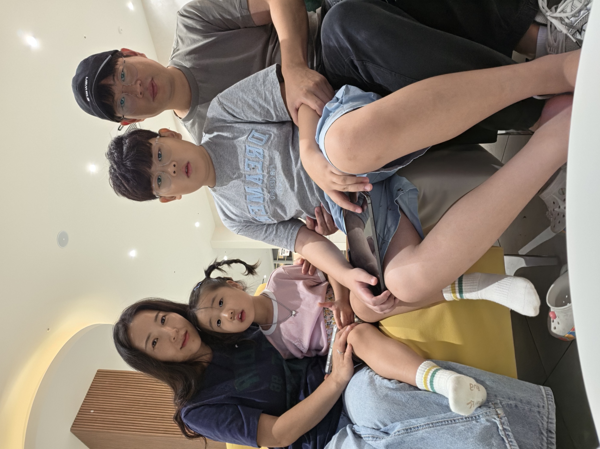

나는 이런 사람이에요
나는 유민이야! 이제 4살이 됐어.
어린이집에 다니면서 선생님, 친구들이랑 신나게 놀아.
매일매일 재미있는 일이 가득해서 하루가 짧아!
내가 좋아하는 것
공룡
공룡이 제일 좋아! 티라노가 최고야
토끼
토끼처럼 폴짝폴짝 뛰는 거 좋아해
베베핀
베베핀 노래 부르는 거 완전 좋아해
사진첩

유
유
만나서 반가워요! 🦖
4살
나는 유민이야!
나는 유민이야! 이제 4살이 됐어.
어린이집에 다니면서 선생님, 친구들이랑 신나게 놀아.
매일매일 재미있는 일이 가득해서 하루가 짧아!
공룡이 제일 좋아! 티라노가 최고야
토끼처럼 폴짝폴짝 뛰는 거 좋아해
베베핀 노래 부르는 거 완전 좋아해

만나서 반가워요! 🦖